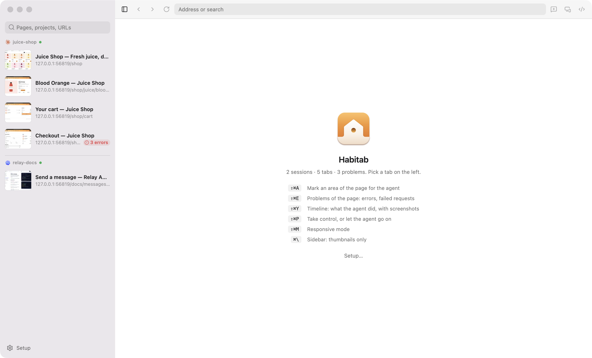
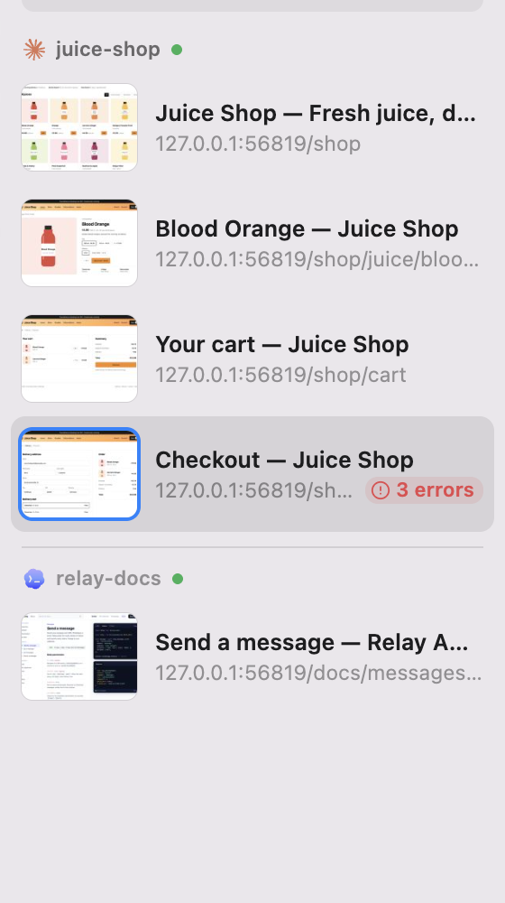
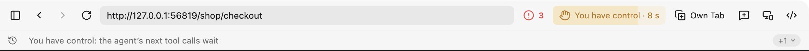
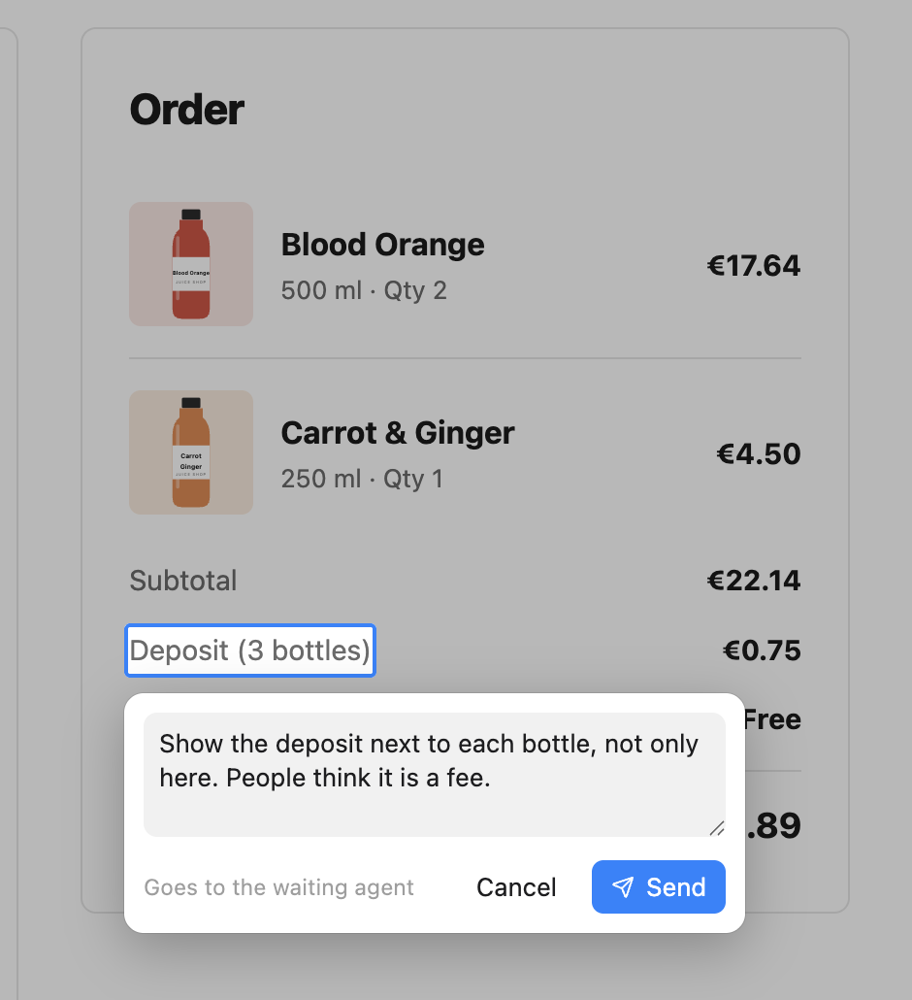

One home for your agent browsers.
Every coding agent session starts its own Chrome. Windows pile up, tabs go orphaned, and you spend the afternoon hunting for the one the agent is actually using. Habitab puts all of them in one window, keeps them apart, and lets you watch, point and step in without getting in the agent's way.

“Where did the browser go?”
Each session of Claude Code or Codex launches its own Chrome through the DevTools MCP server. Three sessions, three Chromes, each with its own Dock icon and a window somewhere behind everything else. When a session ends, its tabs stay open. After a week you have a desktop full of orphaned windows and no idea which one is live.
Habitab is one window. Sessions are grouped by project on the left, one row per tab with a live thumbnail. Click a row and you see that session's real Chromium on the right. Chromium runs inside the app, so there is exactly one Dock icon and nothing that can become orphaned. When a session ends, its tabs close and its data is gone.
- —Every session has its own cookies, storage and cache. An agent only sees the tabs of its own session; its popups land there too.
- —Tabs the agent has not touched for a while fold away. Pin a session and its browser stays after the agent is gone.
- —Restart the app and connected sessions come back with their tabs; the agents do not notice.

“Sorry, I just wanted to quickly check something.”
The agent is in the middle of a test run. You click into the page to look at a menu, scroll a bit, type into a field. The agent does not know. Its next screenshot shows a page it did not expect, its selectors miss, and it starts to debug a problem that you caused. You, meanwhile, get a page pulled out from under your cursor.
In Habitab, your click holds the agent. The moment you interact with a page, the agent's next tool calls wait. Poke around as long as you like. It goes on after ten seconds without input, when you switch to another app, or when you press Resume. Cmd-Tab is not input, and neither is the agent's own typing.
Need more than a quick look? Press Own Tab. The page opens again in a tab only for you, with the same cookies and storage, and the agent goes on in its tab at once. What you do in yours does not hold it.
The other direction holds too: the window never raises itself. An agent that calls bringToFront switches the tab; it does not steal your focus.

“No, the other button. The one on the left. Below the thing.”
Describing a piece of a page in a chat window is slow and lossy. So is copying an error out of the console. And you only find out there is an error after you open the console, scroll, and decide whether that red line is the expected one or a new one.
Habitab lets you point. Mark an area of the page, write a note. The agent gets your words, the URL, the elements inside the area and that part of the screen as an image. The page's context menu has “Send Element to Agent…” for the element under the pointer.
And it shows problems before you ask. Console errors, uncaught exceptions and failed requests are counted per tab: a red count in the tab's row and in the top bar, cleared when the page loads a new document. Click the count and the tab's console opens on them. Right-click the count, or a message in the console, and send them to the agent, the same way as a marked area.


Without a waiting agent, a note goes to the session's inbox: an idle Claude Code session starts a new turn with it, a busy one reads it between tool calls. Codex gets it through its queue. The agent then asks Habitab for the details with wait_for_user_feedback, a tool the launcher adds.
“Wait, what did you just do?”
Agents click faster than you can read. A form fills itself, a dialog flashes by, the page you wanted to comment on is already gone. The chat says “clicked the submit button” and you have to take its word for it.
Habitab keeps a timeline. A screenshot follows every tool call, and another one 400 ms later for pages that were still painting. One card per visible change; calls that changed nothing join the card before. Scroll back, click a card to see it large, with its calls in the status line. Mark an area on an earlier screenshot and the agent is told which call and URL it belongs to.

“Is this even a real browser?”
Habitab is an Electron app, and that can sound like a toy. It is not: every tab is Chromium, the engine of Chrome, and the parts of Chrome you use every day are there.
The real DevTools, docked and resizable, open while the agent works. Responsive mode with a phone preset, the common breakpoints, an exact size and drag handles; the agent's emulate uses the same frame. Address bar, back, reload, find in page. Prompts for camera, microphone and location. An optional persistent profile per project, so logins survive restarts.

A launcher in front of the MCP server. Nothing else changes.
Your agent talks to the official Chrome DevTools MCP server, unchanged. The launcher starts it as a child process, replaces the launch options with a --browserUrl that points at Habitab, and observes the MCP stream to learn which client, project and session it belongs to. The first browser access starts the app in the background.
Everything binds to 127.0.0.1; the socket belongs to your user alone. Runs on macOS and Linux; Windows is prepared in the architecture, not tested.
habitab mcp -- npx -y chrome-devtools-mcp@latest --isolated
the launcher: starts the original command, swaps the launch options for --browserUrl, adds wait_for_user_feedback
Three steps. Safe to run again.
Needs macOS or Linux, Node ≥ 20 and npm. The installer builds the app, puts it in /Applications (Linux: ~/.local/lib/habitab) and starts it. The app then offers the setup: it shows every change to your MCP configurations before applying it, and only command and args change; comments and formatting stay. Running sessions need a restart.
Built for Claude Code and Codex: session mapping, the feedback inbox, the lot. OpenCode and Gemini CLI get the shared browser. --uninstall restores every configuration byte for byte.